To learn how to create connections in FME Form, explore these resources:
After completing this lesson, you’ll be able to:
Connections are secure, reusable containers that store connection parameters. FME has two types of connections: database and web connections. You reference connections within workspace readers, writers, or transformers that need to access the data. There are two main advantages to using connections:
When a dataset's source data is a database, you store connection parameters as a database connection. The connection parameters include the database server, port number, username, password, and other parameters that vary according to the database type. Some database types support optional authentication parameters. For example, when creating a Database Connection on FME Flow for PostgreSQL, optional authentication parameters include a CA Certificate, Client Certificate, Client Private Key, and SSL Password.
When the source data for a dataset is a web service, FME can store connection parameters as a web connection. The connection parameters for a web connection include the web service, authentication information, and any other settings specific to the web service and connecting to it. The information required varies depending on the web service type; for example, Google Drive requires information different from ArcGIS Online.
Creating web connections requires an additional step: configuring the underlying web service. You must register your web service to use FME to create a web connection to the service successfully. Common web services that authenticate using the OAuth standard are already registered in FME (Manage Services > Web Service Definition Templates) for testing purposes. For production environments, you should replace the web service parameters, such as client IDs and client secrets, with your organization's registration parameters rather than the default registration details.
To learn how to create connections in FME Form, explore these resources:
Connections you use for running workspaces in FME Workbench can be published to FME Flow with the workspace in which they are referenced. Connections may be referenced in readers, writers, or transformers.
For example, this workspace has a connection for a PostGIS database, as seen in Navigator under the reader parameters and in the list of database connections.
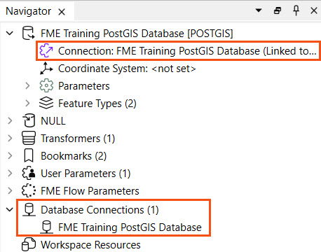
You begin the publishing process as usual to publish a connection with a workspace. Then, the second step of the publishing wizard allows you to select connections used in the workspace to upload to FME Flow. If you choose a connection, it will upload to FME Flow and FME Flow stores it in the FME Flow connections store. The connection will be available for this workspace and others with permissions to reference and use to process your data.
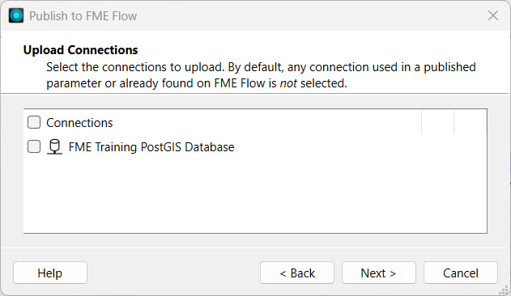
If a connection exists on FME Flow, FME will not select it by default. However, you may choose the connection, which will overwrite the existing one on FME Flow.
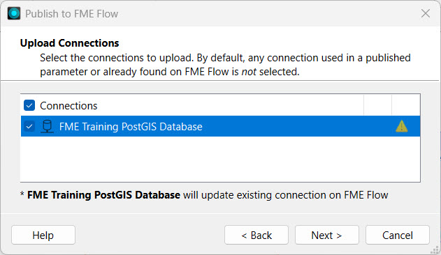
Once publishing is complete, you can see the Uploaded Connections in the translation log's Publish Summary.
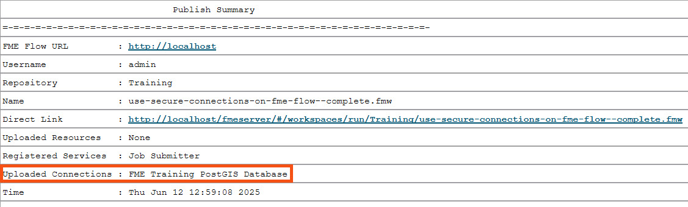
Once published, you can see your connection in either the Web Connections or Database Connections list, which you access from Connections and Parameters on the side menu in FME Flow. This is the same location where you directly create and manage connections on FME Flow, usually done by an FME Flow Administrator.
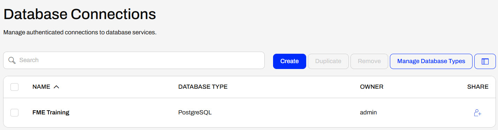
You publish Web Connections and Database Connections with a workspace to FME Flow similarly. However, along with web connections, FME also uploads its associated web services to FME Flow.
For example, when you publish a Google Drive web connection, FME uploads the underlying Google Drive web service that the connection uses to FME Flow. You may manage and inspect web services on FME Flow from Manage Web Services on the Web Connections page.
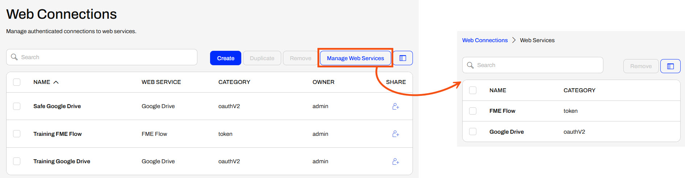
If you don't have an uploaded connection and don't already have one to use on FME Flow, you must create one from the Database Connections page.
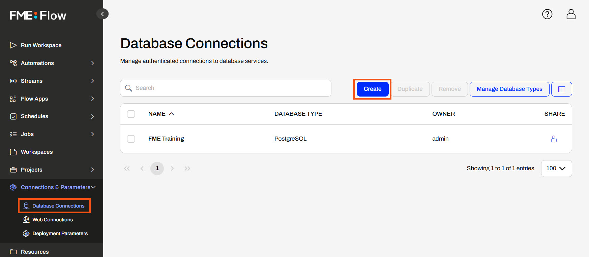
Like FME Workbench, you enter the connection parameters and authentication information to create the connection on FME Flow. You can select the database type from an extensive list of databases, just like on FME Workbench.
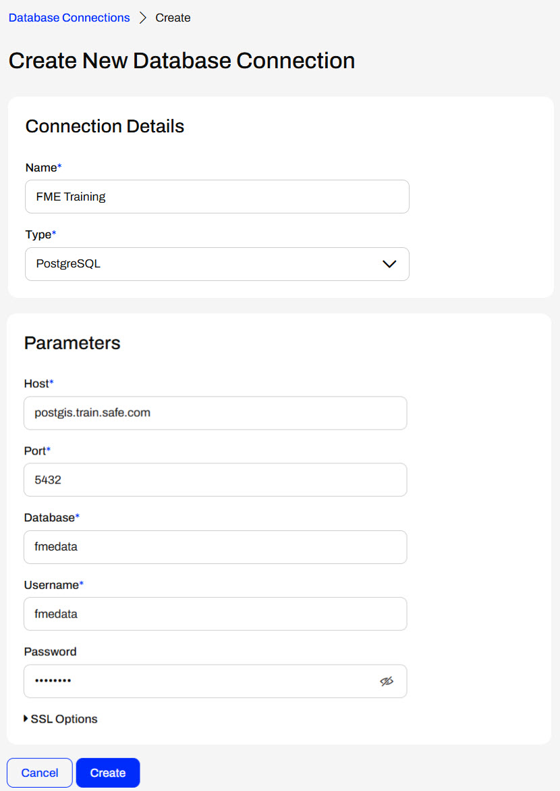
Once you create the connection, it is available for use with workspaces, and you can select it using a published parameter at runtime.
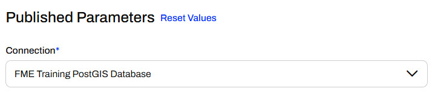
You can create Web Connections directly on FME Flow similar to Database Connections. However, Web Connections require a configured Web Service to function correctly. FME Flow does not come with the web service templates like FME Workbench, so you must upload the web service ahead of time to create a web connection.
You upload web services to FME Flow directly from FME Workbench, which is connected to FME Flow. Navigate to Web Connections in Tools > FME Options. Then, select Manage Services... to view and edit the web services. Select your web service, scroll to the bottom of its details, and choose Upload.

Since Safe Software provides web service definitions for demonstration or testing purposes only, and most web services have separate authorization measures for desktop and web applications, FME will prompt you to enter your organization's Client Information for the web service.
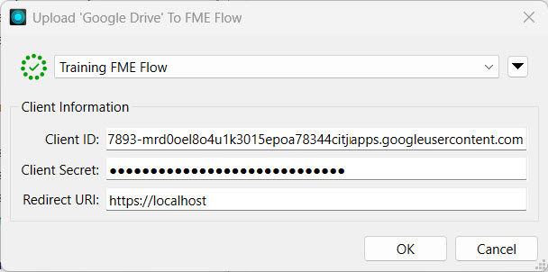
For more information on the authentication parameters for web services, see our Web Connections and FME article.
Once you upload the web service, you can create your web connection on FME Flow. Like database connections, you click the Create button on the Web Connections page to open options and settings to fill out to create the connection.
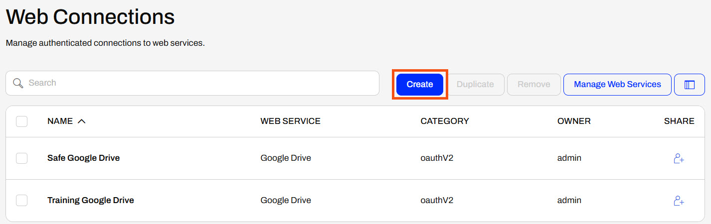
You name your connection and select the underlying web service to use.
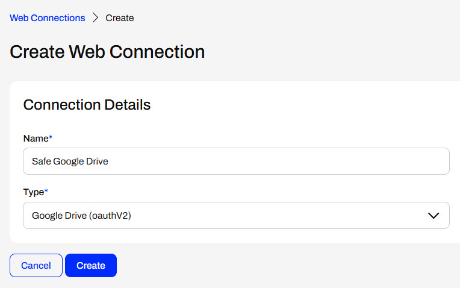
After creating most OAuth connections, you must return to the connection and authorize it. Select the connection from the Web Connections page to open the details and authorization options.
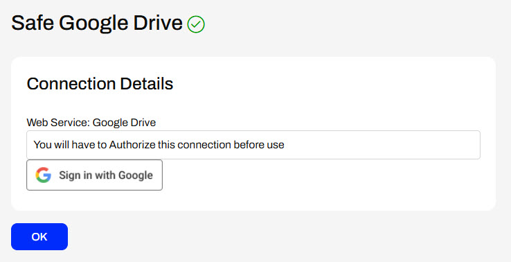
When creating token-based web connections, additional details to configure will appear after you select the web service.
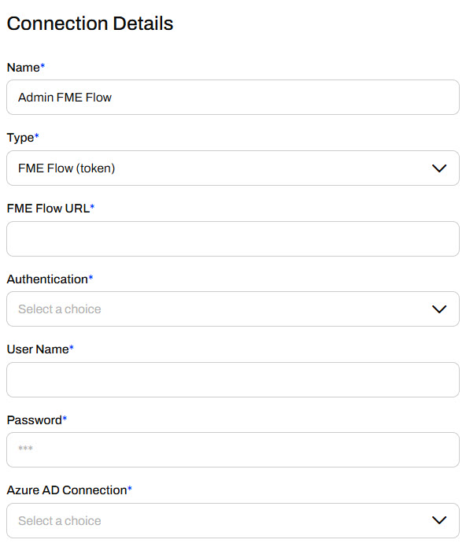
Whether you create a connection on FME Flow or publish it to FME Flow, you manage database and web connections under Connections & Parameters on the side menu. By default, FME Flow limits full permissions to create, edit, remove, or share connections to FME Flow administrators; however, it will depend on how your organization manages user permissions and security.
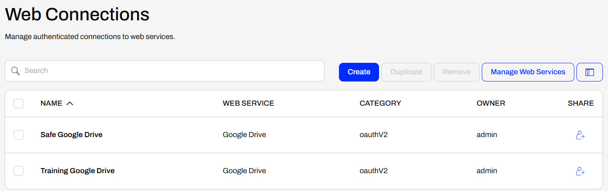
You click on Database Connections to edit them, and then fill out the form with the updated information.
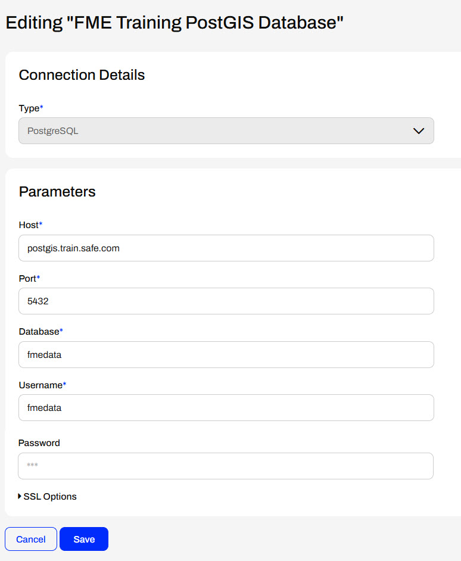
For Web Connections, you can edit token-based connections or authorize OAuth connections.
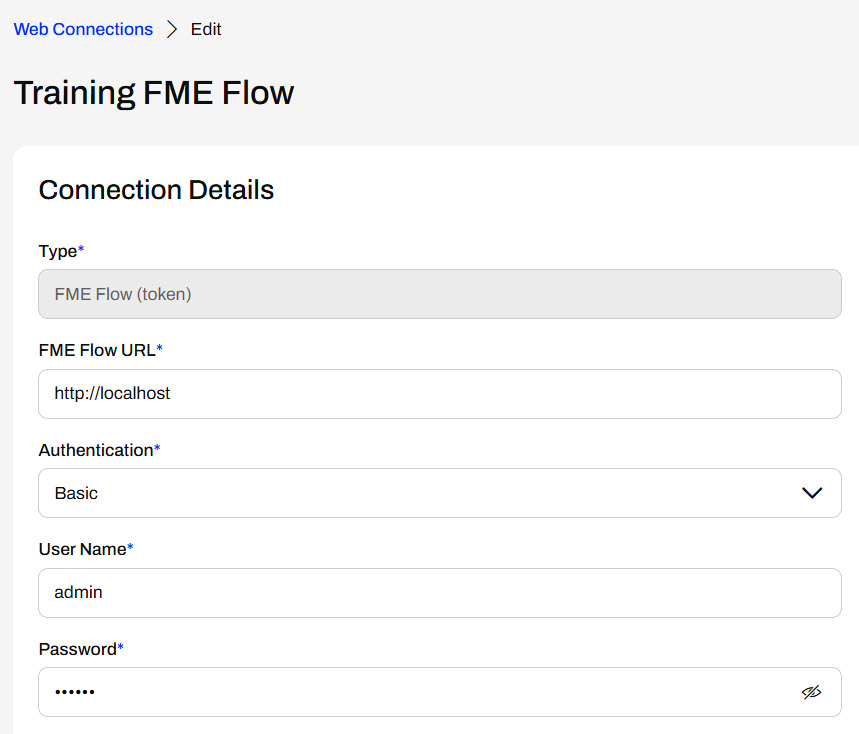
You access the web services on FME Flow from Manage Web Services to alter client information or view additional web service details.
If workspace connections are configured as published parameters, you may select which web or database connection to use at runtime for workspaces. The connection parameters are type-specific, meaning you cannot choose web connections for a database parameter and vice versa.
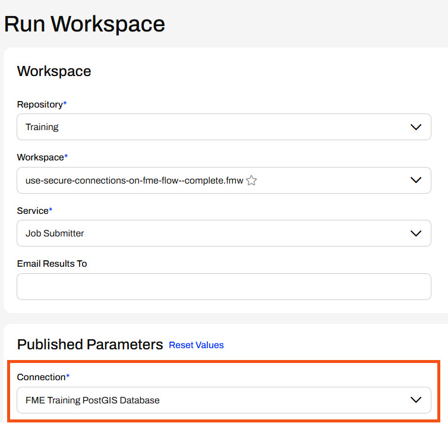

Jennifer, a GIS specialist, is setting up a PostGIS connection on FME Flow to use in multiple workspaces. She is helping one of her colleagues with their workspace, which reads parks as points, clips them to neighborhood polygons, and stores parks in each neighborhood. Jennifer needs to add the readers for these datasets from her organization's PostGIS database and deploy this workflow on FME Flow.
Jennifer opens the starting workspace (C:\FMEData\Workspaces\DeployWorkflowsWithFMEFlow\use-secure-connections-on-fme-flow.fmw) in FME Workbench.
The workspace is supposed to read in Neighborhood polygons and Parks point locations, but these Readers haven’t been added yet. For now, there are bookmarks to mark the place for the Readers. The Clipper clips Parks by the Neighborhood boundaries, and the writer feature type writes out a separate layer of schools for each neighborhood.
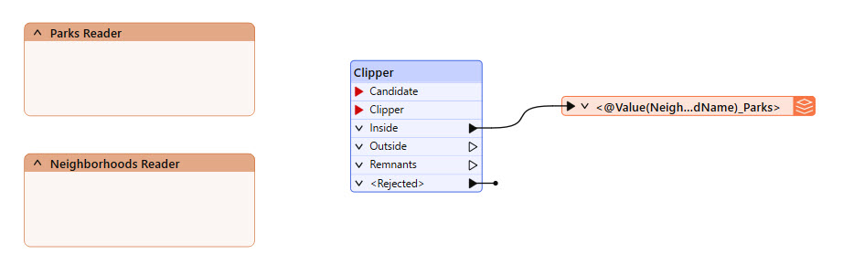
This example workspace uses a NULL writer, which doesn't actually write data.
Jennifer adds a PostGIS Reader and selects the FME Training PostGIS Database connection.
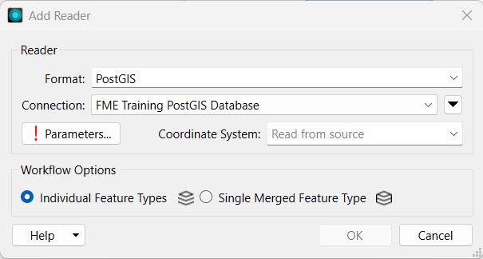
If you're taking a Safe Software-hosted training course, the Database Connection FME Training PostGIS Database should already exist on your training machine.
If you do not have the FME Training PostGIS Database connection, select Add Database Connection from the Connection drop-down options. Fill out the Add PostgreSQL Connection details with the credentials for the FME Training PostGIS database.
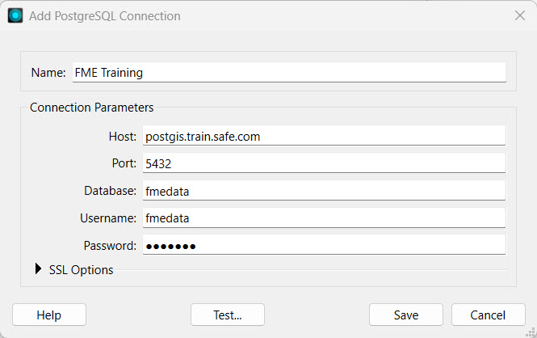
Test and Save your new connection.
Jennifer opens the Parameters and selects the Neighborhoods and Parks tables.
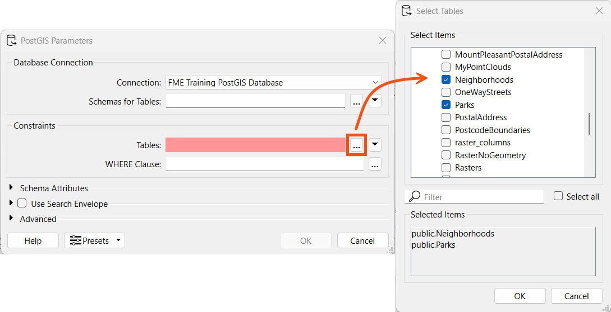
Jennifer clicks OK to select the public.Neighborhoods and public.Parks tables, and then again to close the Parameters and add the Reader Feature Types to the canvas.
Jennifer places the Readers in their bookmarks and connects them to the Clipper. The Parks reader connects to the Candidate port on the Clipper, and the Neighborhoods reader connects to the Clipper port.

Jennifer runs the workspace to ensure it works as expected. She notices a Connection User Parameter present that allows her to optionally select a different database connection. However, she doesn't need to alter it, so she clicks Run.
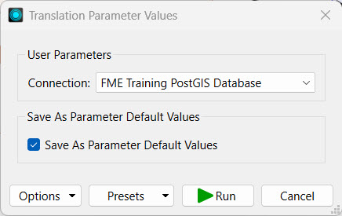
Jennifer clicks Publish to publish the workspace to FME Flow. She stores the workspace in the Training repository.
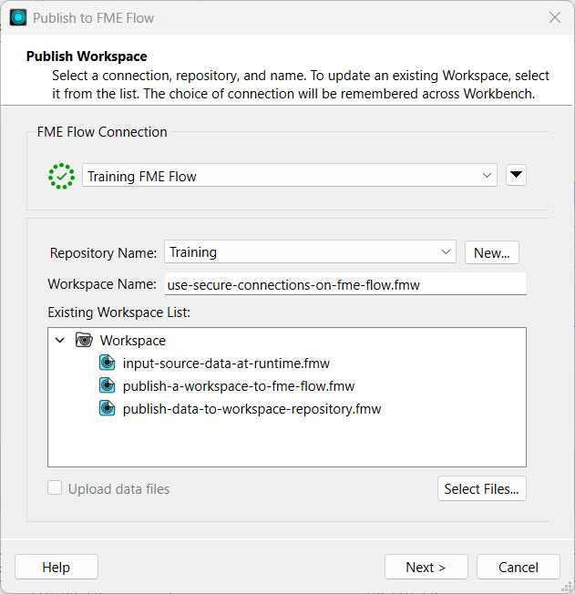
If you are taking a Safe Software-hosted training course, your connection to FME Flow should already exist on your training machine. If you need to create a new connection to FME Flow or create the Training repository, you can review Deploy Workspaces on FME Flow.
Jennifer clicks Next, and the Upload Connections options appear. Jennifer selects the FME Training PostGIS Database connection to upload it to FME Flow. She needs it on FME Flow to run the workspace.
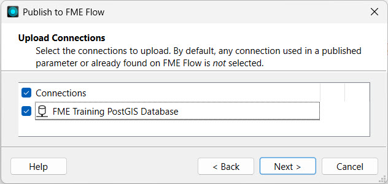
If the database connection already exists on FME Flow, you do not need to publish the connection again unless you have updated the connection details and would like to overwrite the existing one on FME Flow. By default, FME will not select connections that already exist on FME Flow.
Next, Jennifer registers the workspace with the Job Submitter service and clicks Publish.

Jennifer opens FME Flow and navigates to Connections & Parameters > Database Connections. The page shows the database connection she just published with the workspace.

Jennifer clicks on the connection to open the connection details. Since she doesn't need to edit connection parameters, she clicks Cancel to close the editing page.

Jennifer goes to the Run Workspace page and selects the workspace she just published.
Under Published Parameters, she sees the Connection parameter referencing the database connection. Jennifer confirms the Connection parameter references her FME Training PostGIS Database connection. If Jennifer had other database connections on her FME Flow, she could select them from the drop-down option. Jennifer clicks Run to run the workspace using the FME Training PostGIS Database connection on FME Flow.
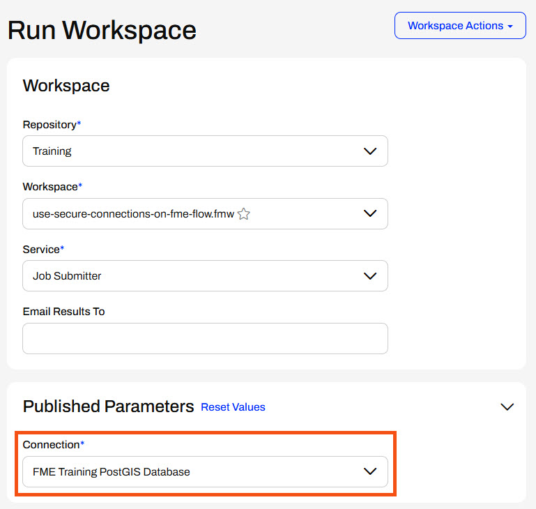
FME Flow uses the database connection to access the Neighborhoods and Parks tables from the PostGIS database and runs the workspace.
Jennifer can reuse this database connection to run other workspaces on FME Flow and share the connection with her colleagues to run their workspaces. She could easily update the database connection by overwriting the existing connection on FME Flow when publishing, or she could edit it directly on FME Flow in the Database Connections store.